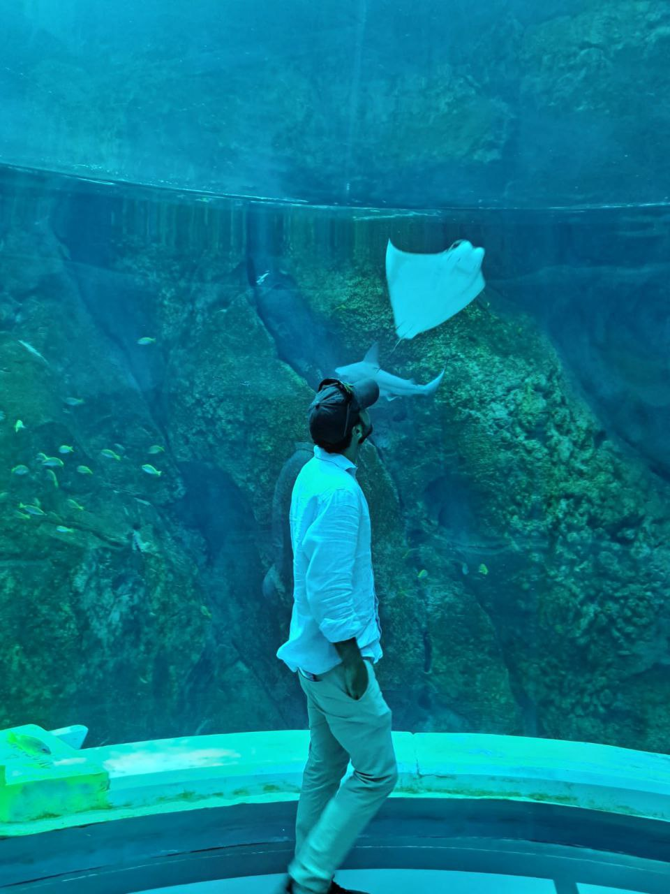

6+
Destinazioni raccontate
Travel creator · Roma

Da Roma al mondo, un viaggio alla volta.
Ho scelto di combinare queste due grandi passioni - Tecnologia e Viaggi - dando vita a questo spazio virtuale.
Destinazioni raccontate
Scatti in galleria
Planned trips